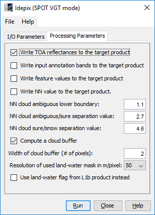
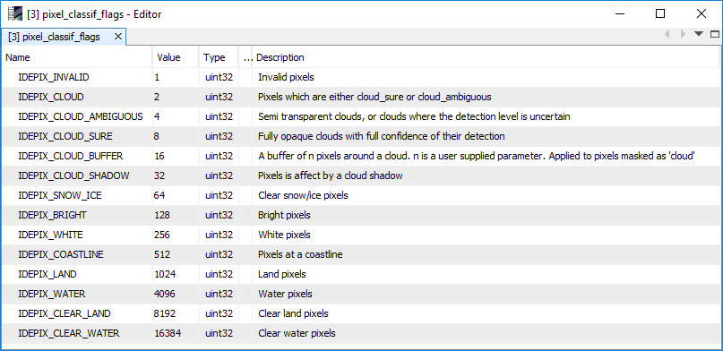
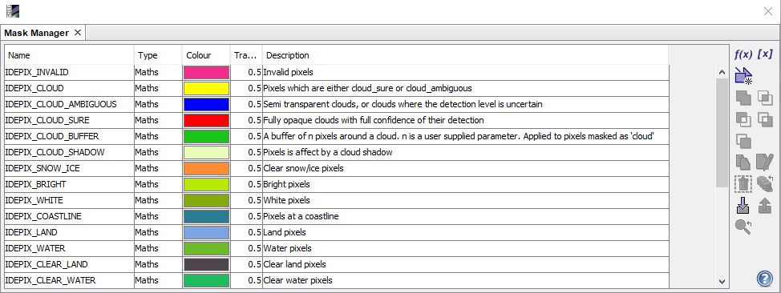

| SNAP Data Processors - Idepix SPOT Vegetation Processor Description |
|

Name: Used to select the spectral source product. The source product shall contain spectral bands providing a source spectrum at each pixel. Use the ... button to open a data product currently not opened in the Sentinel Toolbox.
Name: Used to specify the name of the target product.
Save to: Used to specify whether the target product should be saved to the file system. The combo box presents a list of file formats.
Open in SNAP: Used to specify whether the target product should be opened in the Sentinel Toolbox. When the target product is not saved, it is opened in the Sentinel Toolbox automatically.

Write TOA reflectances to the target product:
If set, all TOA reflectance bands from the source product are written to target product.
The default value is 'true'.
Write input annotation bands to the target product:
If set, all annotation bands from the source product are written to target product.
The default value is 'false'.
Write feature values to the target product:
If set, various feature values computed for the final pixel classification are written to target product.
See algorthm description for more details. The default value is 'false'.
Write NN value to the target product:
If set, the output value of the neural network
(floating point number on the interval [0.0, 5.0]) is written to the target product.
The default value is 'false'.
NN cloud ambiguous lower boundary:
The boundary of the neural network output value where pixels are regarded as either clear (NN output lower
than boundary) or 'cloud ambiguous' (NN output higher than boundary).
Providing the NN cloud ambiguous lower boundary as user option allows a fine tuning of the pixel classification
under certain conditions. The default value is 1.1.
NN cloud ambiguous/sure separation value:
The boundary of the neural network output value where pixels are regarded as either 'cloud ambiguous' (NN output
lower
than boundary) or 'cloud sure' (NN output higher than boundary).
Providing the NN cloud ambiguous/sure separation value as user option allows a fine tuning of the pixel
classification
under certain conditions. The default value is 2.7.
NN cloud sure/snow separation value:
The boundary of the neural network output value where pixels are regarded as either 'cloud sure' (NN output lower
than boundary) or 'snow' (NN output higher than boundary).
Providing the NN cloud sure / snow separation value as user option allows a fine tuning of the pixel classification
under certain conditions. The default value is 4.6.
Compute a cloud buffer:
If set, a cloud buffer of certain width is computed around pixels classified as 'cloud sure'.
The default value is 'true'.
Width of cloud buffer (# of pixels):
If a cloud buffer is computed, the buffer width (in # of pixels around the cloudy reference pixel) can be specified.
The default value is '2'.
Resolution of used land-water mask in m/pixel:
The resolution of the underlying SRTM (Shuttle Radar Topography Mission) land-water mask
in metres per pixel. The default value is '50'.
Use land-water flag from L1 product instead:
If set, the land-water flag from the L1 source product is used instead of the SRTM-based mask.
The default value is 'false'.

